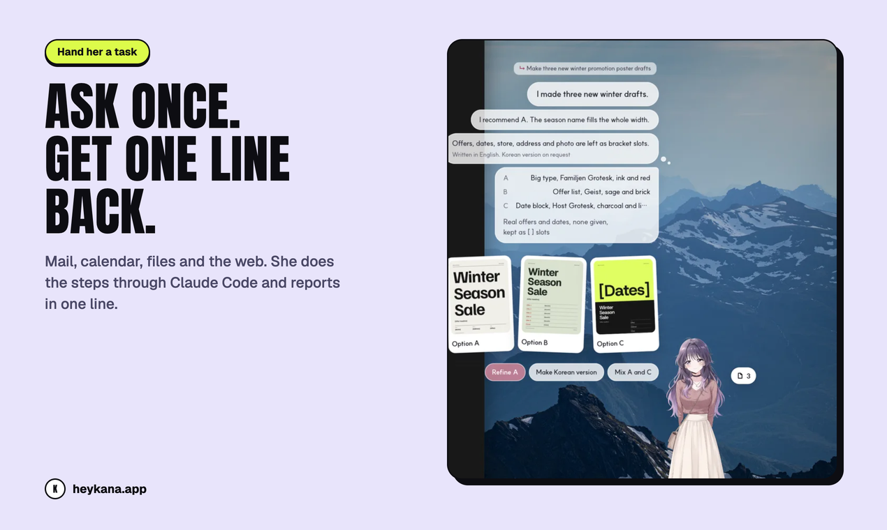
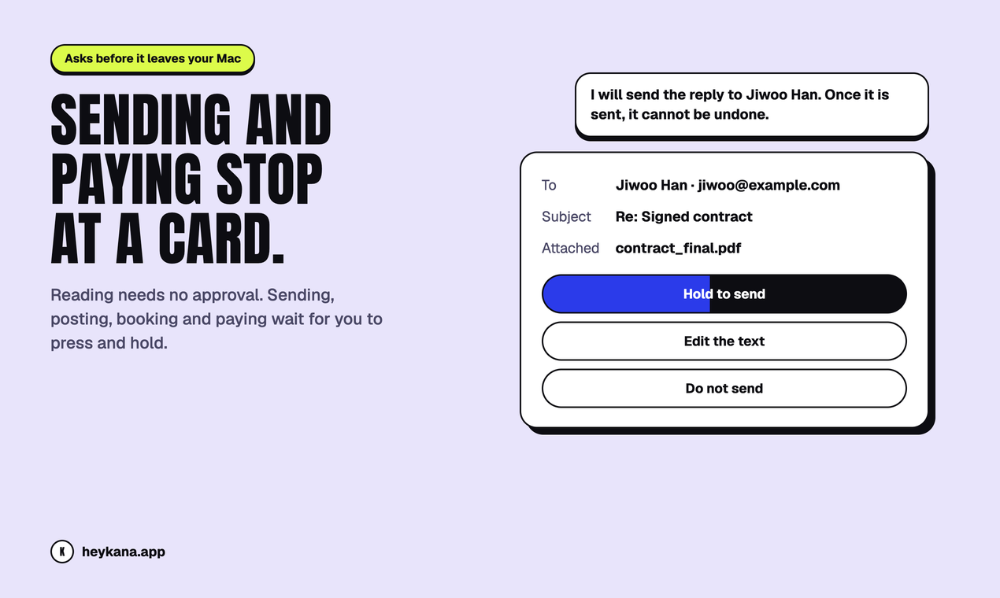
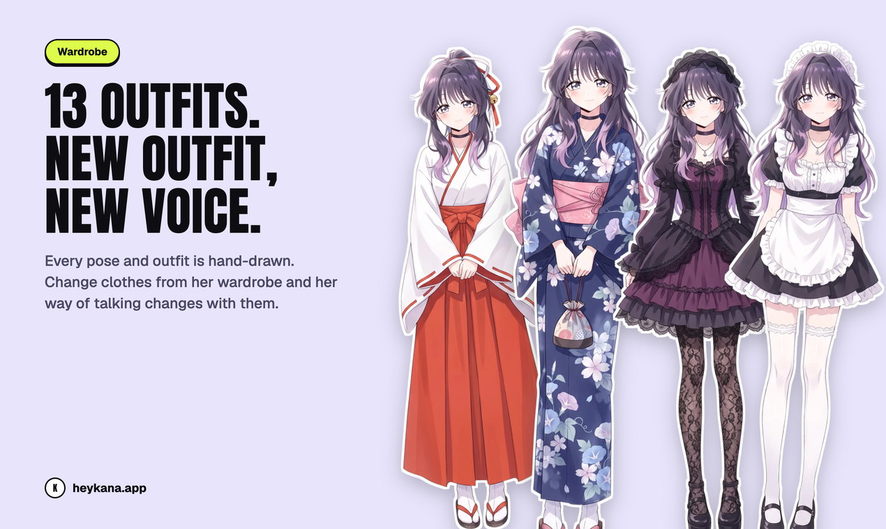
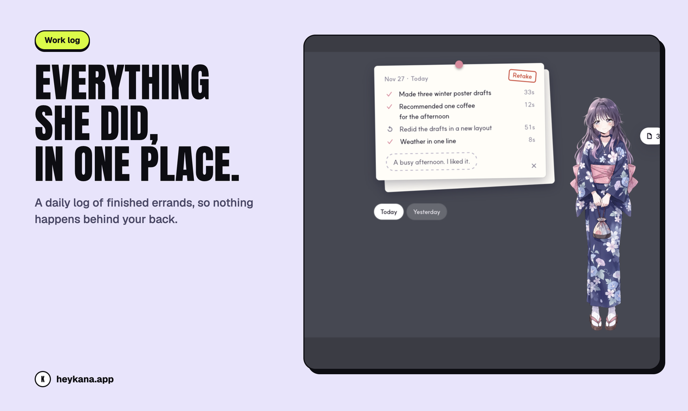

Press kit
Everything you need to write about Kana. Text and images on this page may be used in articles, reviews and directory listings about Kana.
Fact sheet
- Name
- Kana
- What it is
- A desktop AI agent for Mac: a hand-drawn anime character who runs errands through Claude Code
- Made by
- YOOANPAPA, an independent designer in Korea
- Launched
- November 27, 2026
- Price
- US$19 launch price (regular US$24), one-time purchase, 14-day refund
- Requires
- macOS 13 or later, Apple silicon, and Claude Code on the Mac (a Claude Pro or Max plan, or an API key)
- Languages
- Korean, English
- Website
- heykana.app
- Contact
- hello@heykana.app
Descriptions to copy
A hand-drawn AI agent who lives on your Mac desktop.
Kana is a desktop AI agent for Mac: an anime character who runs mail, calendar, file and web errands with Claude Code, and asks before sending or paying.
Kana is a native macOS app that puts a hand-drawn anime character on your desktop who actually gets things done. Hand her a task in a speech bubble, such as sorting your calendar, drafting a reply, finding a file or looking something up, and she does the steps through Claude Code, then reports back in one line. Reading needs no approval. Anything that leaves your Mac (sending, posting, booking, paying, deleting) stops at an approval card that shows exactly what will go out and waits for a press-and-hold. She never touches passwords, card numbers or one-time codes. Kana thinks with Claude Code on your Mac (you need a Claude Pro or Max plan, or an API key); there is no Kana server. Korean and English, 13 hand-drawn outfits, a daily work log. macOS 13+, Apple silicon. One-time purchase.
Images

 On the desktop · 1270×760
On the desktop · 1270×760

Hand her a task · 1270×760

Approval card · 1270×760

13 outfits · 1270×760

Work log · 1270×760Using these materials
- You may use the icon, screenshots and text above when writing about Kana.
- Please don’t crop the character in half, change her colours, or redraw her.
- Please call the product “Kana” and the maker “YOOANPAPA”.
- Kana works with Claude Code. It is an independent product, not made or endorsed by Anthropic.